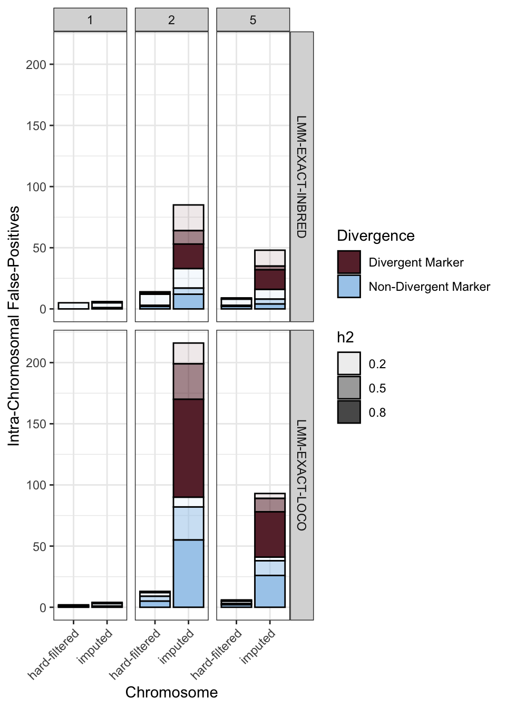
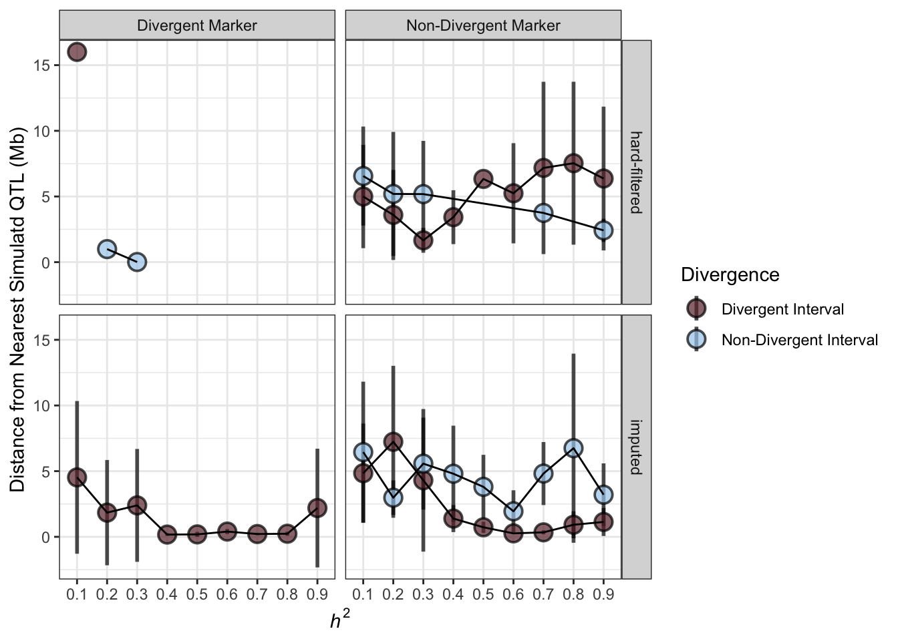
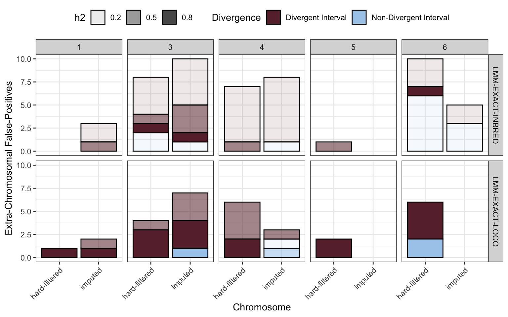
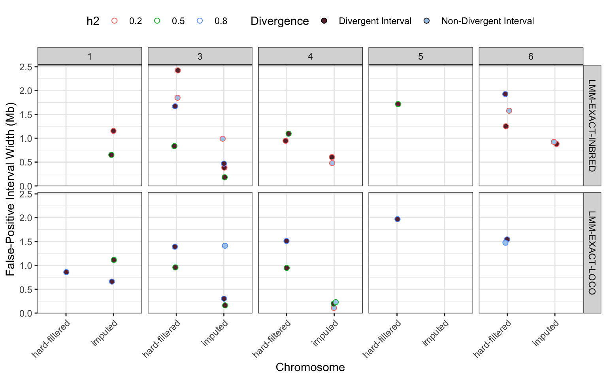

Hard-Filtered v. Imputed Variants
Last updated: 2020-11-13
Checks: 6 1
Knit directory: NemaScan_Performance/
This reproducible R Markdown analysis was created with workflowr (version 1.6.2). The Checks tab describes the reproducibility checks that were applied when the results were created. The Past versions tab lists the development history.
Great! Since the R Markdown file has been committed to the Git repository, you know the exact version of the code that produced these results.
Great job! The global environment was empty. Objects defined in the global environment can affect the analysis in your R Markdown file in unknown ways. For reproduciblity it’s best to always run the code in an empty environment.
The command set.seed(20200825) was run prior to running the code in the R Markdown file. Setting a seed ensures that any results that rely on randomness, e.g. subsampling or permutations, are reproducible.
Great job! Recording the operating system, R version, and package versions is critical for reproducibility.
Nice! There were no cached chunks for this analysis, so you can be confident that you successfully produced the results during this run.
Using absolute paths to the files within your workflowr project makes it difficult for you and others to run your code on a different machine. Change the absolute path(s) below to the suggested relative path(s) to make your code more reproducible.
| absolute | relative |
|---|---|
| ~/Documents/projects/NemaScan_Performance/ | . |
Great! You are using Git for version control. Tracking code development and connecting the code version to the results is critical for reproducibility.
The results in this page were generated with repository version b1dfb17. See the Past versions tab to see a history of the changes made to the R Markdown and HTML files.
Note that you need to be careful to ensure that all relevant files for the analysis have been committed to Git prior to generating the results (you can use wflow_publish or wflow_git_commit). workflowr only checks the R Markdown file, but you know if there are other scripts or data files that it depends on. Below is the status of the Git repository when the results were generated:
Ignored files:
Ignored: .DS_Store
Ignored: .Rhistory
Ignored: analysis/.DS_Store
Ignored: analysis/figure/
Ignored: code/.DS_Store
Ignored: data/.DS_Store
Ignored: data/.Rhistory
Ignored: output/.DS_Store
Untracked files:
Untracked: code/Find_GCTA_Intervals.R
Untracked: code/startup.R
Untracked: code/susie.R
Untracked: data/ARMS_CENTERS.tsv
Untracked: data/CelegansStrainData.tsv
Untracked: data/Common_divergent_regions_clustered.tsv
Untracked: data/Intermediate_divergent_regions_clustered.tsv
Untracked: data/NemaScan_Performance.Algorithm.Sims.20201024.RData
Untracked: data/NemaScan_Performance.Algorithm.Sims.20201110_EMMA.RData
Untracked: data/NemaScan_Performance.Algorithm.Sims.v.2.20201104.RData
Untracked: data/NemaScan_Performance.CeNDR2020_GAMMA_EMMA_hardfiltered.20201020.RData
Untracked: data/NemaScan_Performance.CeNDR2020_PowerPrecision.RData
Untracked: data/NemaScan_Performance.CeNDR2020_PowerPrecision_GAMMA.20200909.RData
Untracked: data/NemaScan_Performance.CeNDR2020_PowerPrecision_GAMMA.RData
Untracked: data/NemaScan_Performance.CeNDR2020_PowerPrecision_GAMMA_EMMA.20200924.RData
Untracked: data/NemaScan_Performance.CeNDR2020_PowerPrecision_REDO.20200909.RData
Untracked: data/NemaScan_Performance.CeNDR2020_cendr_sets.20200929.RData
Untracked: data/NemaScan_Performance.CeNDR2020_population_subsampling.20200925.RData
Untracked: data/NemaScan_Performance.CeNDR2020_population_subsampling.20201018.RData
Untracked: data/NemaScan_Performance.CeNDR2020_population_subsampling.20201019.RData
Untracked: data/NemaScan_Performance.Variant.Set.HF.chr125.20201112.RData
Untracked: data/NemaScan_Performance.Variant.Set.Hard.Filtered.20201111.RData
Untracked: data/NemaScan_Performance.Variant.Set.Imputed.20201111.RData
Untracked: data/NemaScan_Performance.Variant.Set.Imputed.NonDivergent.20201112.RData
Untracked: data/NemaScan_Performance.Variant.Set.Imputed.chr125.20201112.RData
Untracked: data/Rare_divergent_regions_clustered.tsv
Untracked: data/TO_SIMS.bim
Untracked: data/all_susie_BF_hits.tsv
Untracked: data/all_susie_hits.tsv
Untracked: data/causal.variants.sim.100.txt
Untracked: data/causal.variants.sim.5.txt
Untracked: data/chr125.bed
Untracked: data/common.divergent.regions.bed
Untracked: data/genome.bed.tsv
Untracked: data/hahnel_209.tsv
Untracked: data/hard.filtered.snps.bim
Untracked: data/hard.filtered.variants.only.bed
Untracked: data/imputed.snps.bim
Untracked: data/int.divergent.regions.bed
Untracked: data/nondivergent.regions.bed
Untracked: data/rare.divergent.regions.bed
Untracked: data/sweep_summary.tsv
Untracked: output/5_12_0.2_0.05_0.5-5_hahnel.isotypes.manhattan.plot.png
Untracked: output/5_13_0.7_0.05_0.5-5_hahnel.isotypes.manhattan.plot.png
Untracked: output/5_13_0.8_0.05_0.5-5_hahnel.isotypes.manhattan.plot.png
Untracked: output/5_14_0.1_0.05_0.5-5_hahnel.isotypes.manhattan.plot.png
Untracked: output/5_21_0.5_0.05_0.5-5_hahnel.isotypes.manhattan.plot.png
Untracked: output/5_21_0.9_0.05_0.5-5_hahnel.isotypes.manhattan.plot.png
Untracked: output/5_22_0.5_0.05_0.5-5_hahnel.isotypes.manhattan.plot.png
Untracked: output/5_22_0.9_0.05_0.5-5_hahnel.isotypes.manhattan.plot.png
Untracked: output/5_27_0.3_0.05_0.5-5_hahnel.isotypes.manhattan.plot.png
Untracked: output/5_27_0.9_0.05_0.5-5_hahnel.isotypes.manhattan.plot.png
Untracked: output/5_42_0.5_0.05_0.5-5_hahnel.isotypes.manhattan.plot.png
Untracked: output/n.divergent.variants.in.variant.set.png
Untracked: output/perc.divergent.variants.in.variant.set.png
Untracked: output/susie.validation.csv
Untracked: power.plot.png
Unstaged changes:
Modified: analysis/population.comparison.Rmd
Modified: code/commonly.used.sim.locations.R
Note that any generated files, e.g. HTML, png, CSS, etc., are not included in this status report because it is ok for generated content to have uncommitted changes.
These are the previous versions of the repository in which changes were made to the R Markdown (analysis/variant.set.comp.Rmd) and HTML (docs/variant.set.comp.html) files. If you’ve configured a remote Git repository (see ?wflow_git_remote), click on the hyperlinks in the table below to view the files as they were in that past version.
| File | Version | Author | Date | Message |
|---|---|---|---|---|
| Rmd | b1dfb17 | Sam Widmayer | 2020-11-13 | figures? |
| Rmd | 5d17b85 | Sam Widmayer | 2020-11-13 | update with restricted simulation sites |
| Rmd | de9386f | Sam Widmayer | 2020-11-13 | update with restricted simulation sites |
| html | b763a96 | Sam Widmayer | 2020-11-12 | Build site. |
| Rmd | 6fe3e0c | Sam Widmayer | 2020-11-12 | update with restricted variant set |
| Rmd | a886ae1 | Sam Widmayer | 2020-11-11 | update with restricted variant set |
| html | 14b26a8 | Sam Widmayer | 2020-10-01 | Build site. |
| Rmd | c3de9bc | Sam Widmayer | 2020-10-01 | add divergence of simulated QTL |
| html | b3284e1 | Sam Widmayer | 2020-10-01 | Build site. |
| Rmd | caccc56 | Sam Widmayer | 2020-10-01 | update divergence classification |
| Rmd | 356d98b | Sam Widmayer | 2020-09-28 | incorporate FP analysis |
| html | 4485c11 | Sam Widmayer | 2020-09-28 | Build site. |
| Rmd | 04630c2 | Sam Widmayer | 2020-09-28 | establish variant set comp analysis |
Analysis date: November 13, 2020
Simulation Parameters
NemaScan simulation performance was assessed with the following experimental parameters:
Number of Simulated QTL:
5Sample Population(s):
hahnel.isotypesHeritability(ies):
0.2, 0.5, 0.8MAF(s):
0.05Number of Replicates per Regime:
200QTL Effect Range:
0.5-5Algorithm:
LMM-EXACT-INBRED, LMM-EXACT-LOCOVariant Set:
hard-filtered, imputed
Simulated QTL Locations


Performance Analysis
`summarise()` regrouping output by 'h2', 'variant.set', 'divergent.pos' (override with `.groups` argument)Joining, by = c("h2", "variant.set", "divergent.pos", "algorithm", ".metric", ".estimator", ".estimate")Joining, by = c("h2", "variant.set", "divergent.pos", "algorithm")


Divergent Regions and False-Positives
`summarise()` regrouping output by 'algorithm', 'variant.set', 'divergent.pos' (override with `.groups` argument) algorithm variant.set Detected Divergent Marker Non-Divergent Marker
1 LMM-EXACT-INBRED hard-filtered TRUE 171 896
2 LMM-EXACT-INBRED hard-filtered FALSE 306 1627
3 LMM-EXACT-INBRED imputed TRUE 414 420
4 LMM-EXACT-INBRED imputed FALSE 1140 1026
5 LMM-EXACT-LOCO hard-filtered TRUE 206 1095
6 LMM-EXACT-LOCO hard-filtered FALSE 271 1428
7 LMM-EXACT-LOCO imputed TRUE 608 529
8 LMM-EXACT-LOCO imputed FALSE 946 917`summarise()` regrouping output by 'algorithm', 'variant.set' (override with `.groups` argument) algorithm variant.set Divergent Marker Non-Divergent Marker
1 LMM-EXACT-INBRED hard-filtered 4 50
2 LMM-EXACT-INBRED imputed 89 76
3 LMM-EXACT-LOCO hard-filtered 5 35
4 LMM-EXACT-LOCO imputed 180 145Intra-Chromosomal False-Positives
`summarise()` regrouping output by 'CHROM', 'h2', 'variant.set', 'divergent.pos' (override with `.groups` argument)Warning: Using alpha for a discrete variable is not advised.
Warning: Removed 2 rows containing missing values (geom_segment).Warning: Removed 3 rows containing missing values (geom_segment).Warning: Removed 2 rows containing missing values (geom_segment).Warning: Removed 4 rows containing missing values (geom_segment).Warning: Removed 1 rows containing missing values (geom_segment).Warning: Removed 2 rows containing missing values (geom_segment).
Extra-Chromosomal False-Positives
`summarise()` regrouping output by 'CHROM', 'algorithm', 'h2', 'variant.set' (override with `.groups` argument)Warning: Using alpha for a discrete variable is not advised.

sessionInfo()R version 3.6.3 (2020-02-29)
Platform: x86_64-apple-darwin15.6.0 (64-bit)
Running under: macOS Mojave 10.14.6
Matrix products: default
BLAS: /Library/Frameworks/R.framework/Versions/3.6/Resources/lib/libRblas.0.dylib
LAPACK: /Library/Frameworks/R.framework/Versions/3.6/Resources/lib/libRlapack.dylib
locale:
[1] en_US.UTF-8/en_US.UTF-8/en_US.UTF-8/C/en_US.UTF-8/en_US.UTF-8
attached base packages:
[1] parallel stats4 stats graphics grDevices utils datasets
[8] methods base
other attached packages:
[1] GenomicRanges_1.38.0 GenomeInfoDb_1.22.1 IRanges_2.20.2
[4] S4Vectors_0.24.4 BiocGenerics_0.32.0 RColorBrewer_1.1-2
[7] nationalparkcolors_0.1.0 yardstick_0.0.7 workflows_0.2.1
[10] tune_0.1.1 rsample_0.0.8 recipes_0.1.13
[13] parsnip_0.1.3 modeldata_0.0.2 infer_0.5.3
[16] dials_0.0.9 scales_1.1.1 broom_0.7.2
[19] tidymodels_0.1.1 forcats_0.5.0 stringr_1.4.0
[22] dplyr_1.0.2 purrr_0.3.4 readr_1.4.0
[25] tidyr_1.1.2 tibble_3.0.4 ggplot2_3.3.2
[28] tidyverse_1.3.0 workflowr_1.6.2
loaded via a namespace (and not attached):
[1] colorspace_1.4-1 ellipsis_0.3.1 class_7.3-17
[4] rprojroot_1.3-2 XVector_0.26.0 fs_1.5.0
[7] rstudioapi_0.11 farver_2.0.3 listenv_0.8.0
[10] furrr_0.1.0 prodlim_2019.11.13 fansi_0.4.1
[13] lubridate_1.7.9 xml2_1.3.2 codetools_0.2-16
[16] splines_3.6.3 knitr_1.30 jsonlite_1.7.1
[19] pROC_1.16.2 dbplyr_1.4.4 compiler_3.6.3
[22] httr_1.4.2 backports_1.1.10 assertthat_0.2.1
[25] Matrix_1.2-18 cli_2.1.0 later_1.1.0.1
[28] htmltools_0.5.0 tools_3.6.3 GenomeInfoDbData_1.2.2
[31] gtable_0.3.0 glue_1.4.2 Rcpp_1.0.5
[34] cellranger_1.1.0 DiceDesign_1.8-1 vctrs_0.3.4
[37] iterators_1.0.12 timeDate_3043.102 gower_0.2.2
[40] xfun_0.18 globals_0.13.1 rvest_0.3.6
[43] lifecycle_0.2.0 future_1.19.1 zlibbioc_1.32.0
[46] MASS_7.3-53 ipred_0.9-9 hms_0.5.3
[49] promises_1.1.1 yaml_2.2.1 rpart_4.1-15
[52] stringi_1.5.3 highr_0.8 foreach_1.5.0
[55] lhs_1.1.1 lava_1.6.8 bitops_1.0-6
[58] rlang_0.4.8 pkgconfig_2.0.3 evaluate_0.14
[61] lattice_0.20-41 labeling_0.4.2 tidyselect_1.1.0
[64] plyr_1.8.6 magrittr_1.5 R6_2.4.1
[67] generics_0.0.2 DBI_1.1.0 pillar_1.4.6
[70] haven_2.3.1 whisker_0.4 withr_2.3.0
[73] RCurl_1.98-1.2 survival_3.2-7 nnet_7.3-14
[76] modelr_0.1.8 crayon_1.3.4 rmarkdown_2.5
[79] grid_3.6.3 readxl_1.3.1 data.table_1.13.2
[82] blob_1.2.1 git2r_0.27.1 reprex_0.3.0
[85] digest_0.6.27 httpuv_1.5.4 munsell_0.5.0
[88] GPfit_1.0-8